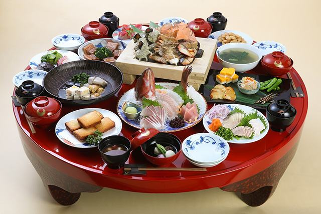
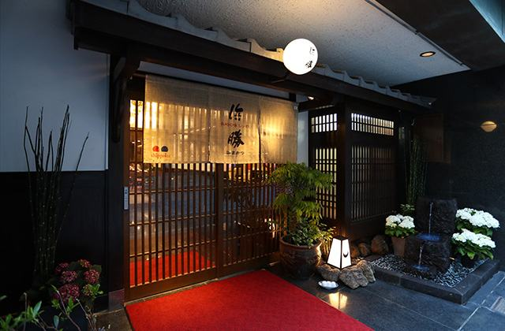
| 営業時間 | 11:00〜21:30（料理ラストオーダー20:00／ホットペッパー表記では 11:00〜15:00 と 17:00〜21:30 で、14:30〜17:00 の予約は店に要確認）。クエ鍋コース・単品クエ鍋は19:30でオーダーストップ |
|---|---|
| 定休日 | 大晦日と元日 |
| 住所 | 長崎県長崎市鍛冶屋町6-50 |
| 予約 | 予約可。電話 095-826-8321 または公式サイトの予約フォーム、ホットペッパーグルメのネット予約。卓袱奉行コースは前日までの予約が必要。個室利用は1人6,500円（税込）以上の料理から。 — ☎ 095-826-8321 ／ 公式サイト |
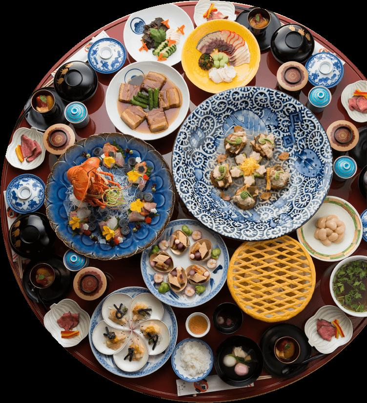
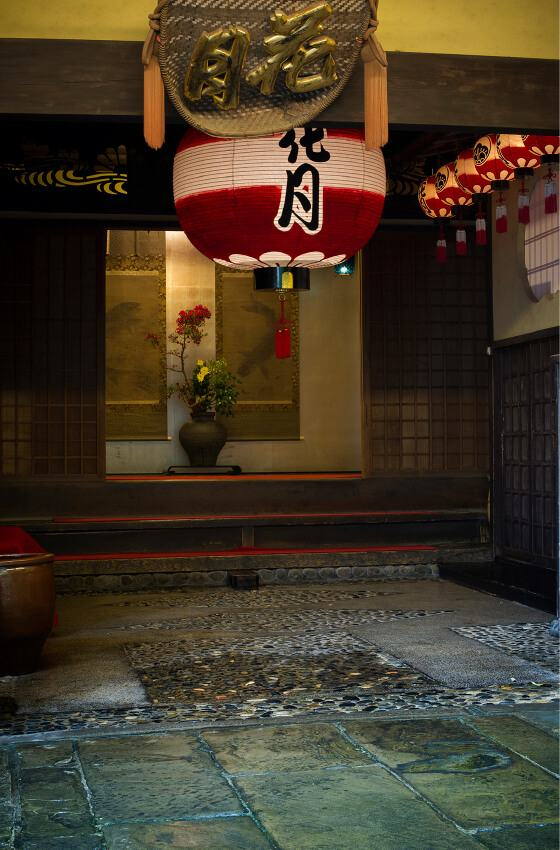
| 営業時間 | 昼 12:00〜15:00（ラストオーダー13:00）／夜 18:00〜22:00（ラストオーダー19:00） |
|---|---|
| 定休日 | 不定休（主に火曜日）。別にメンテナンス休業日あり（公式サイトのカレンダーに表示） |
| 住所 | 長崎県長崎市丸山町2-1 |
| 予約 | 完全予約制。大人2名から、前日までに電話 095-822-0191 で予約する。個人客は2か月前から受付。仕出し・持ち帰りの予約は10:00〜18:00に電話で。 — ☎ 095-822-0191 ／ 公式サイト |
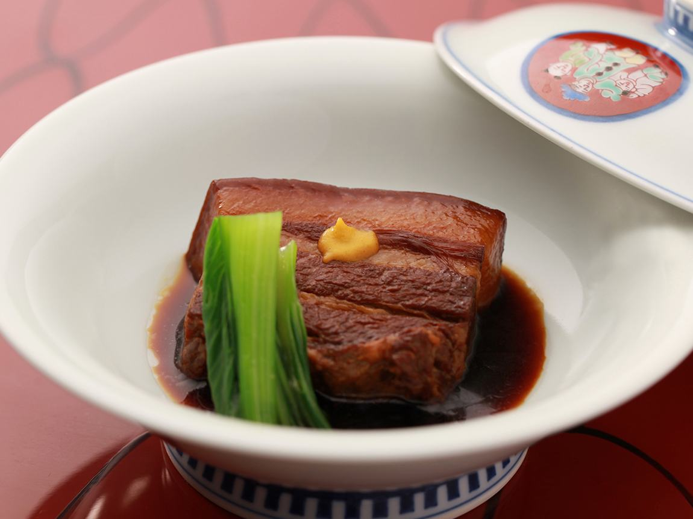
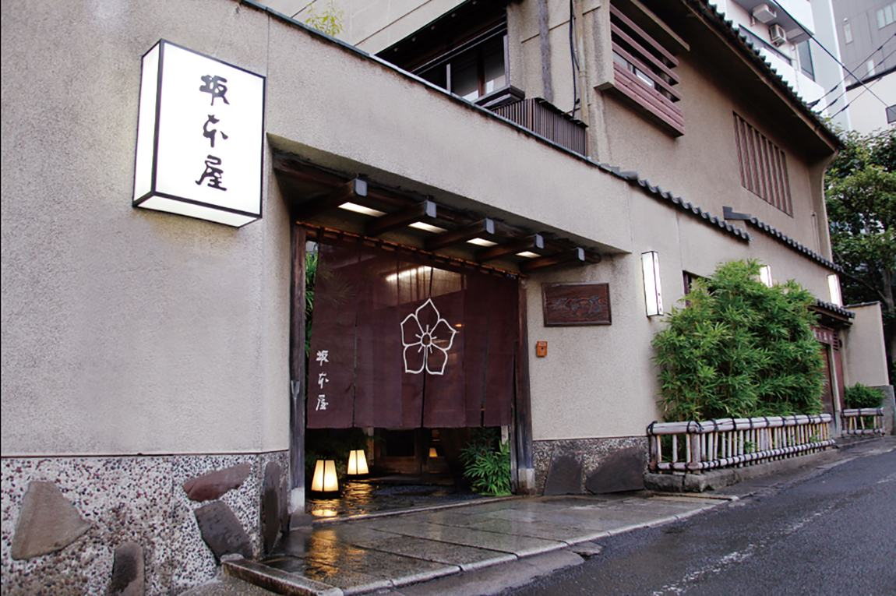
| 営業時間 | 料亭 11:30〜21:30（入店時間は昼 11:30〜13:30／夜 17:30〜19:30）。本店販売コーナー 10:00〜18:00 |
|---|---|
| 定休日 | 不定休 |
| 住所 | 長崎県長崎市金屋町2-13 |
| 予約 | 要予約。電話 095-826-8211 またはフリーダイヤル 0120-26-8210。料理は2名から。お昼のおまかせ膳は平日昼限定1日30食で要予約。 — ☎ 095-826-8211 ／ 公式サイト |
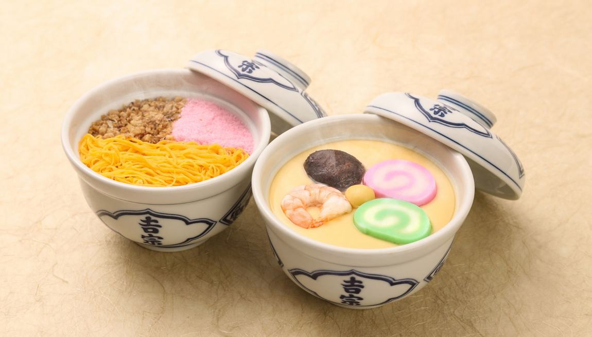
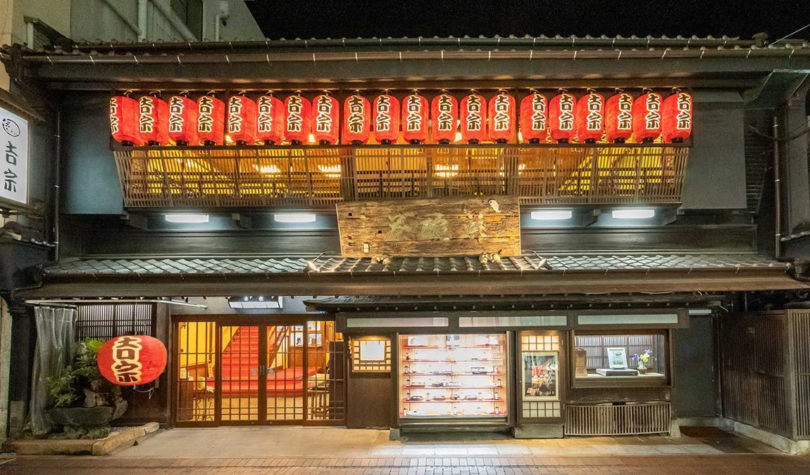
| 営業時間 | 11:00〜19:30ラストオーダー。平日は1階 11:00〜17:00（L.O.16:00）・2階 11:00〜15:30（L.O.14:30）と 17:00〜20:30（L.O.19:30）。土日は1階 11:00〜20:30（L.O.19:30）・2階は平日と同じ区切り。14:30〜17:00は1階のみの営業 |
|---|---|
| 定休日 | 毎週火曜（祝日・繁忙期を除く）、1月1日、8月15日、12月31日 |
| 住所 | 長崎県長崎市浜町8-9 |
| 予約 | 予約可。電話 095-821-0001。卓袱料理（13品・2人前から）は前日までの予約が必要。土日祝の予約は1か月前で受付終了。 — ☎ 095-821-0001 ／ 公式サイト |
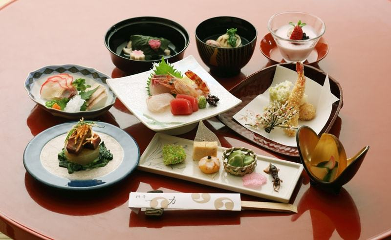
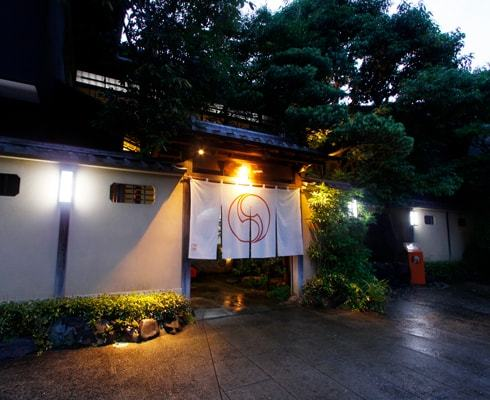
| 営業時間 | 入店時間 昼 11:30〜13:30／夜 17:00〜19:30 |
|---|---|
| 定休日 | 不定休 |
| 住所 | 長崎県長崎市諏訪町8-20 |
| 予約 | 要予約。電話 095-824-0226（FAX 095-826-3583、メール ryotei@ichiriki.jp）。卓袱・会席とも2名から。アレルギーは予約時に申し出る。キャンセル料の規定が公式サイトにある。 — ☎ 095-824-0226 ／ 公式サイト |
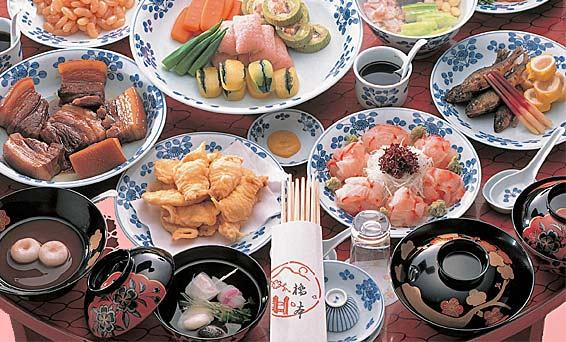
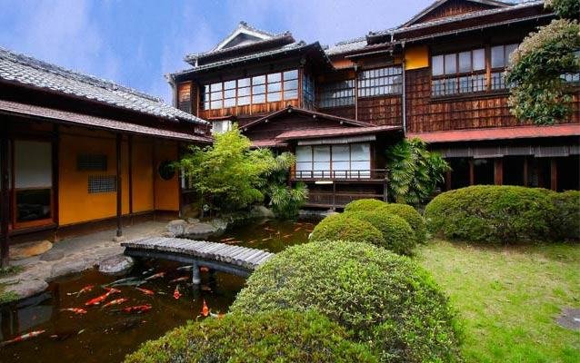
| 営業時間 | 12:00〜14:30／17:00〜22:00 |
|---|---|
| 定休日 | 不定休（完全予約制） |
| 住所 | 長崎県長崎市中川1丁目4番5号 |
| 予約 | 完全予約制。電話 095-825-2001（FAX 095-824-3366）。夜席は2名から、昼席限定の料金は4名から。予約のときに「ホームページを見た」と伝える。駐車場も要予約。支払いは現金のみ。 — ☎ 095-825-2001 ／ 公式サイト |
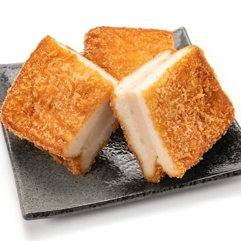
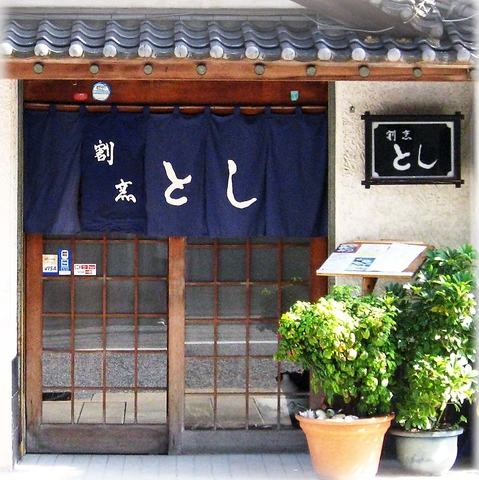
| 営業時間 | 月・火・木・金 11:30〜13:30（料理ラストオーダー12:30／ドリンク13:00）と 18:00〜22:00（料理21:00／ドリンク22:00）／水・土・祝前日 18:00〜22:00（料理21:00／ドリンク22:00） |
|---|---|
| 定休日 | 日曜・祝日 |
| 住所 | 長崎県長崎市中町5-22 |
| 予約 | 予約可。電話 095-825-4452（受付は日曜・祝日を除く10:00〜22:00）、公式サイトとホットペッパーグルメのネット予約。卓袱コースは2名から25名、カウンター限定で1名も可。コースは来店2日前14時以降のキャンセルに50%（前日75%、当日100%）のキャンセル料。 — ☎ 095-825-4452 ／ 公式サイト |
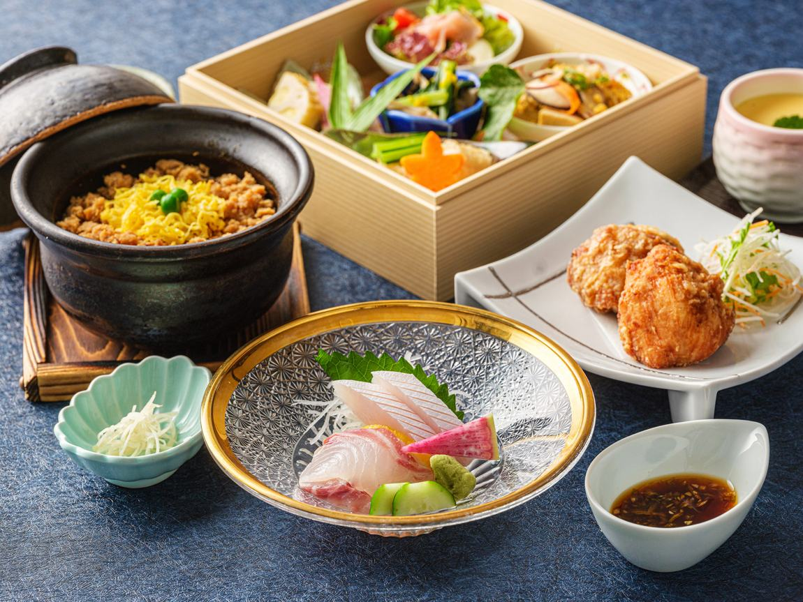
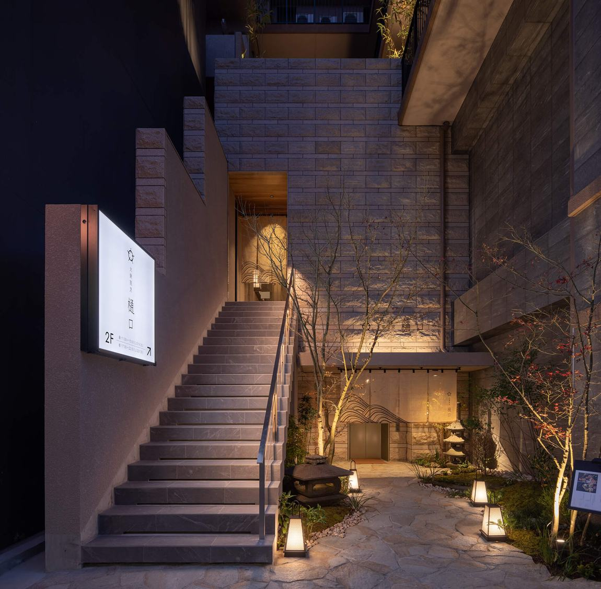
| 営業時間 | 昼 11:00〜15:00（ラストオーダー14:30）／夜 17:00〜22:00（ラストオーダー21:30）。15:00〜17:00はテイクアウトのみ |
|---|---|
| 定休日 | 第一・第三月曜日（祝日の場合は火曜日）。大晦日・元旦 |
| 住所 | 長崎県長崎市築町5-11 2F |
| 予約 | 予約可。電話 095-801-1112（予約の電話は9:00〜11:30と14:00〜18:00）、公式サイトのネット予約、ホットペッパーグルメ。コースは来店2日前17時以降のキャンセルに100%のキャンセル料。席の利用は2時間まで。 — ☎ 095-801-1112 ／ 公式サイト |
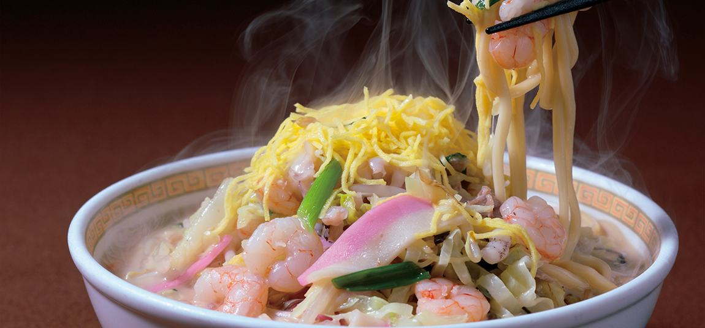
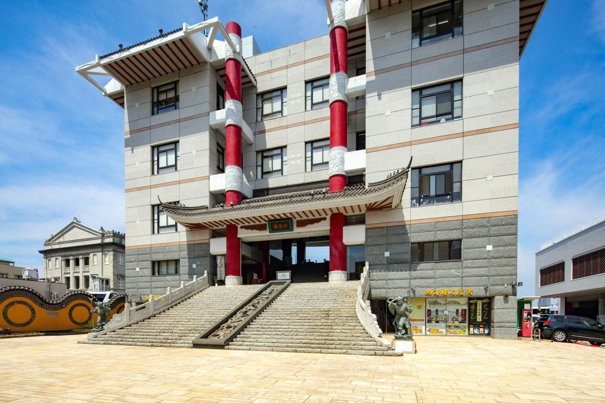
| 営業時間 | レストラン 昼の部 11:30〜15:00（最終入店14:00、混雑時には早まる）／夜の部 17:00〜20:00（最終入店19:00、混雑時には早まる）。1階売店 10:00〜17:30（公式サイト「営業のご案内」2026.10.25） |
|---|---|
| 定休日 | 不定休。公式サイトが月ごとに休業日を告知しており、2026年は10/28（水）、11/11（水）・11/25（水）、12/2（水）・12/16（水）・12/30（水）・12/31（木） |
| 住所 | 長崎県長崎市松が枝町4-5 |
| 予約 | レストラン席の予約は受け付けていない。個室のみ、2営業日前までに4名以上・コース料理の注文で受け付ける。受付は電話095-822-1296またはFAX095-826-7353で、問い合わせ時間は10時〜17時。ネット・アプリ・予約代行サービスからの予約は一切不可（公式サイト 2026.10.25） — ☎ 095-822-1296 ／ 公式サイト |
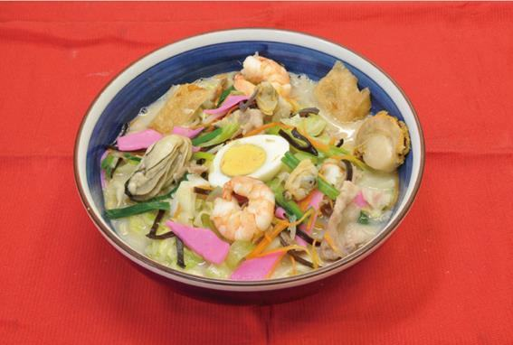
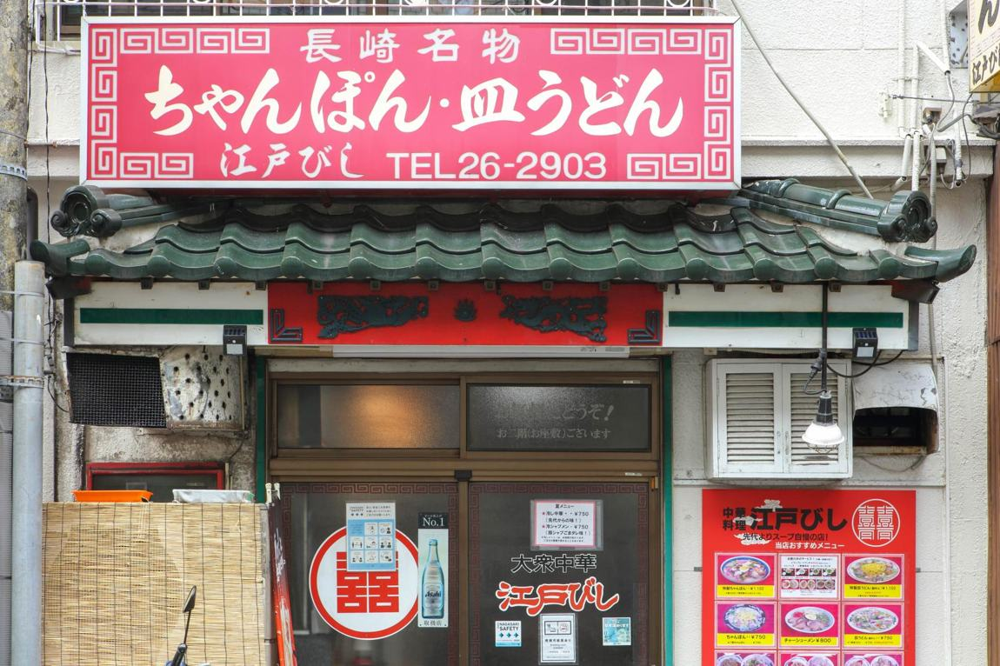
| 営業時間 | 11:00〜ラストオーダー13:30／17:30〜ラストオーダー20:30（長崎市公式観光サイトの観光特集、記事更新日2026-03-06）。長崎市公式観光サイトの店舗情報（2022.09.09）は11:00〜14:00／17:30〜20:30と記載 |
|---|---|
| 定休日 | 不定休（長崎市公式観光サイト）。2022年の長崎市の冊子『長崎ちゃんぽんぼん』は日曜休と記載しており食い違うため、訪問前に電話で確認したい |
| 住所 | 長崎県長崎市江戸町1-6 |
| 予約 | 宴会の予約は受け付けると長崎市公式観光サイトの店舗情報にある。ネット予約の窓口は無く、問い合わせは電話095-826-2903 — ☎ 095-826-2903 |
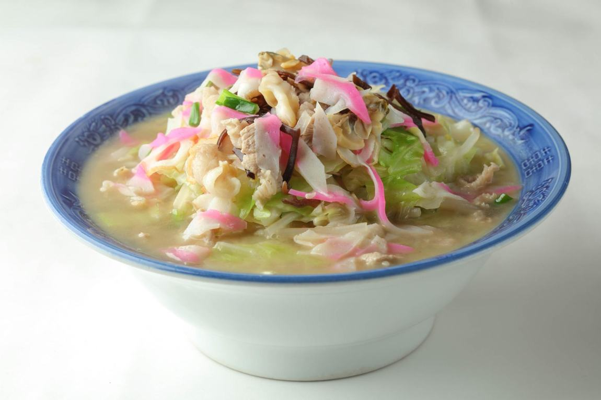
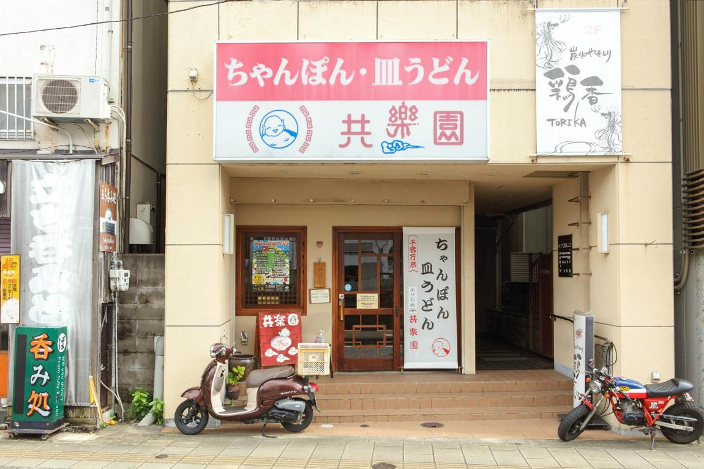
| 営業時間 | 11:00〜ラストオーダー14:30／17:00〜ラストオーダー19:30（長崎市公式観光サイトの観光特集、記事更新日2026-03-06）。ホットペッパーグルメの掲載（2020/01/07 更新）は11:00〜15:00（料理L.O.14:30）／17:00〜20:00（料理L.O.19:30） |
|---|---|
| 定休日 | 火曜日 |
| 住所 | 長崎県長崎市古川町5-4 kyoビル1階 |
| 予約 | ネット予約の窓口は無く、ホットペッパーグルメの掲載にも予約可否の記載が無い。問い合わせは電話095-822-8257 — ☎ 095-822-8257 |
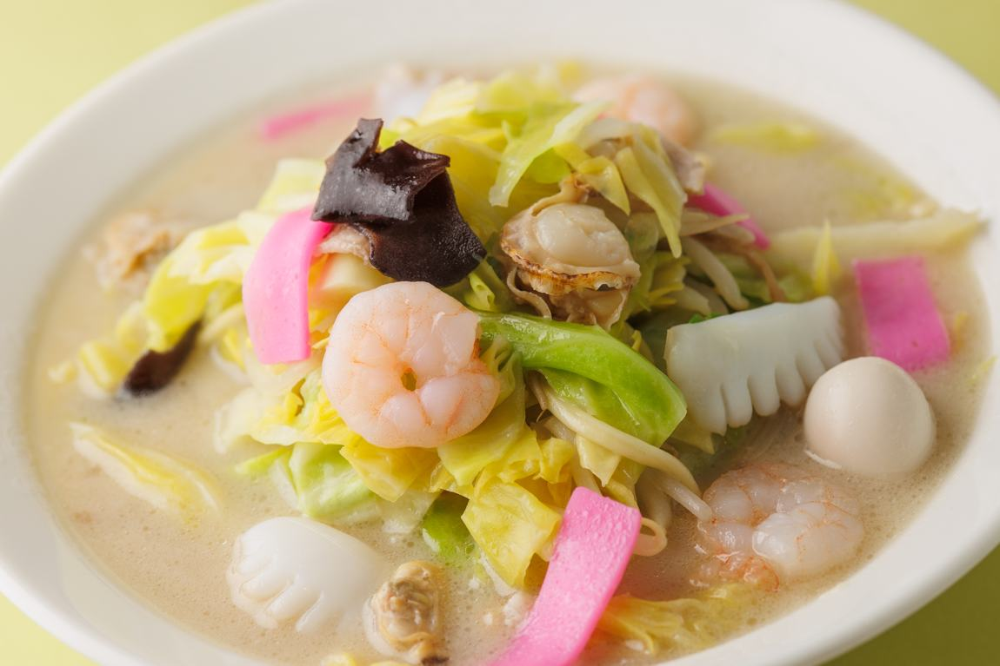
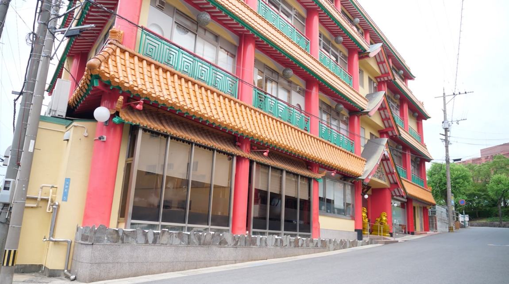
| 営業時間 | 昼の部 11:30〜15:00（ラストオーダー14:30）／夜の部 17:00〜20:30（ラストオーダー20:00）（公式サイト 2026-11-22 取得） |
|---|---|
| 定休日 | 不定休。公式Instagramの店休日カレンダーで月ごとに告知（公式サイトに定休日の固定曜日の記載は無い） |
| 住所 | 長崎県長崎市平野町5番23号 |
| 予約 | 1階レストラン席は予約不可（当日来店のみ）。予約は2階以上の個室でコース料理を注文する場合のみで、4名から、電話095-846-2277で確定。キャンセル料は2日前まで0％、前日50％、当日100％（公式サイト） — ☎ 095-846-2277 ／ 公式サイト |
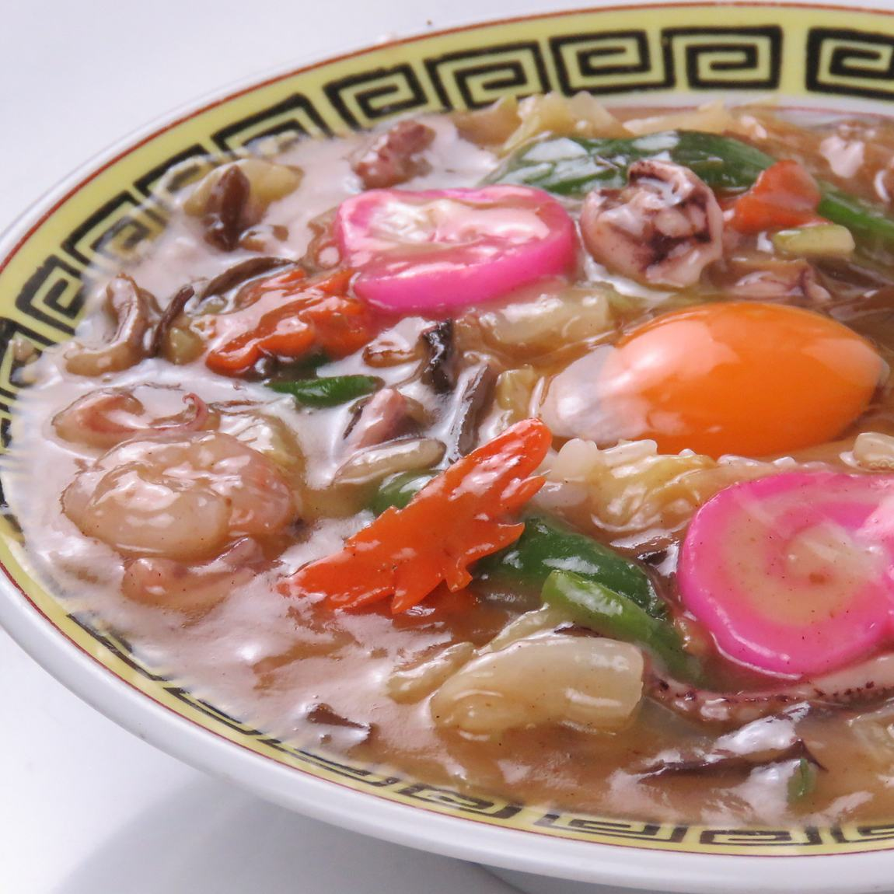
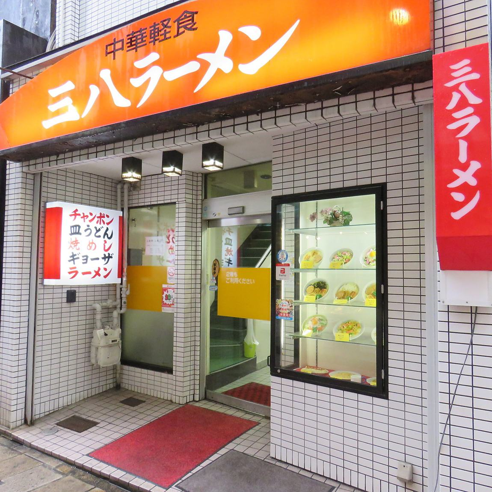
| 営業時間 | 火曜〜金曜 18:00〜翌2:00／土・日 11:00〜14:30、18:00〜翌2:00（公式サイト 2026年11月13日更新）。ホットペッパーグルメの掲載（2021/03/26 更新）は火〜木・日・祝 11:30〜14:30／18:00〜翌1:00、金・土・祝前日は18:00〜翌2:00となっており食い違うため、新しい公式サイトの時間を採った |
|---|---|
| 定休日 | 月曜日（祝日の場合は振替） |
| 住所 | 長崎県長崎市銅座町14-11 |
| 予約 | ネット予約の窓口は無く、ホットペッパーグルメの掲載にも予約可否の記載が無い。問い合わせは電話095-821-3838 — ☎ 095-821-3838 ／ 公式サイト |
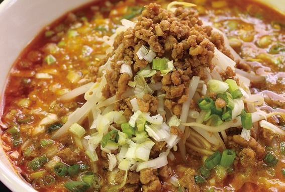
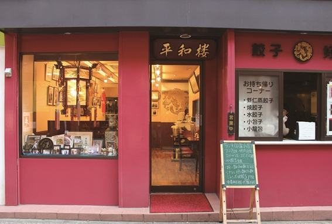
| 営業時間 | 11:30〜14:30／17:00〜20:00（長崎市公式観光サイト 店舗情報 2024.02.19） |
|---|---|
| 定休日 | 木曜日 |
| 住所 | 長崎県長崎市万屋町4-3 |
| 予約 | 予約についての記載は長崎市公式観光サイトの店舗情報にも公式SNSにも無く、ネット予約の窓口も無い。問い合わせは電話095-822-0931 — ☎ 095-822-0931 |
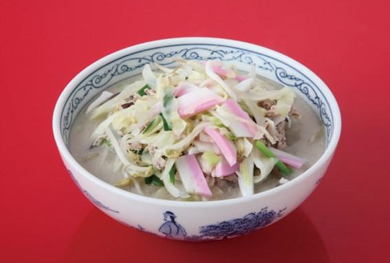
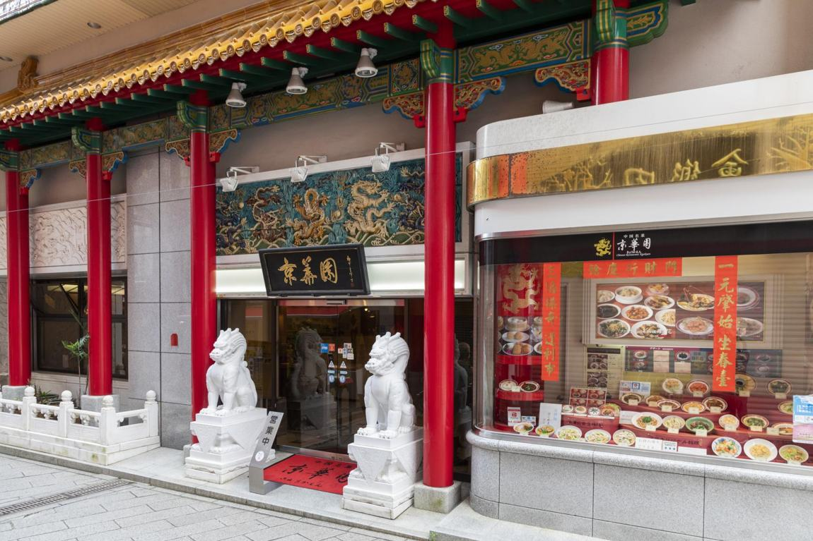
| 営業時間 | 昼の部 11:00〜15:00（最終入店14:30）／夜の部 17:00〜20:30（最終入店19:30）。混雑時は最終入店時間が異なる場合がある（公式サイト 2026-11-22 取得） |
|---|---|
| 定休日 | 不定休（公式サイト 会社概要） |
| 住所 | 長崎県長崎市新地町9番7号 |
| 予約 | 1階レストラン席の予約は受け付けていない（公式サイトのレストランメニューのページに「＊レストランの御予約はお受けできません。」と明記）。宴会・コース料理は電話095-821-1507で受け付け、キャンセル規定が公式サイトに掲示されている — ☎ 095-821-1507 ／ 公式サイト |
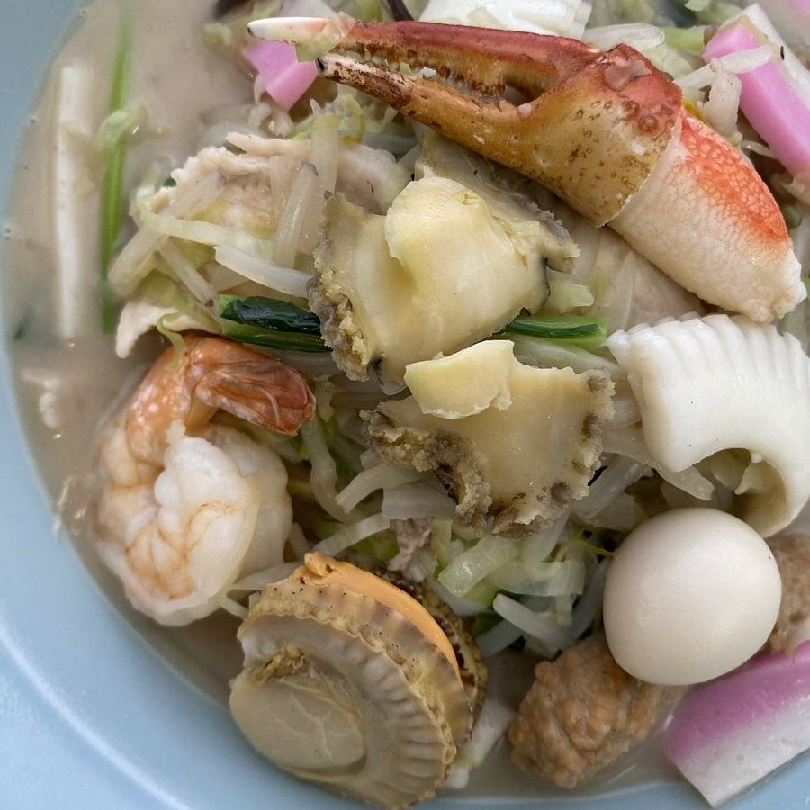
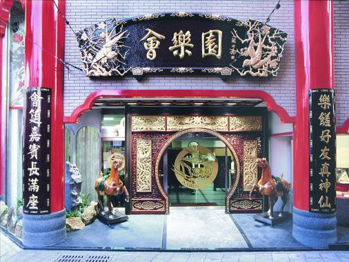
| 営業時間 | ランチ 11:00〜15:15（ラストオーダー14:30）／ディナー 17:00〜21:00（ラストオーダー19:50）。お座敷の入店は19:00まで（公式サイト 会社概要 2026-11-22 取得） |
|---|---|
| 定休日 | 不定休（公式サイト 会社概要）。長崎ランタンフェスティバルの期間中は火曜が店休日と公式Instagramが告知 |
| 住所 | 長崎県長崎市新地町10-16 |
| 予約 | 公式サイトに予約フォームは無く、問い合わせは電話095-822-4261（FAX095-824-2483）。コース料理・ご宴会・ご法事のプランを公式サイトが案内している — ☎ 095-822-4261 ／ 公式サイト |
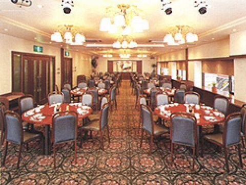
| 営業時間 | 開店11:00（平日は11:30）／15:00〜17:00は準備中で食事の提供なし／受付終了20:00（状況により早まる）／閉店20:30（公式サイト「営業案内」2026年11月2日更新 2026-11-22 取得） |
|---|---|
| 定休日 | 毎週月曜・火曜（祝日に当たる場合は別日に振替）、お盆・年末年始。2026年は11/2〜3を11/4（水）へ、11/17（火）を11/19（木）へ、11/23を11/25（水）へ振替、12/15と12/29は店休日を返上、12/31〜1/1は休み（公式サイト） |
| 住所 | 長崎県長崎市新地町13-13 |
| 予約 | レストラン席は予約不可（当日来店）。個室・宴会場はコース料理での利用に限られ、前日までの予約・大人4名以上から。当日の予約は受け付けない。コースは1名6,000・8,000・10,000・12,000・15,000円（税・サービス料別）。問い合わせは電話095-820-3735（代） — ☎ 095-820-3735 ／ 公式サイト |
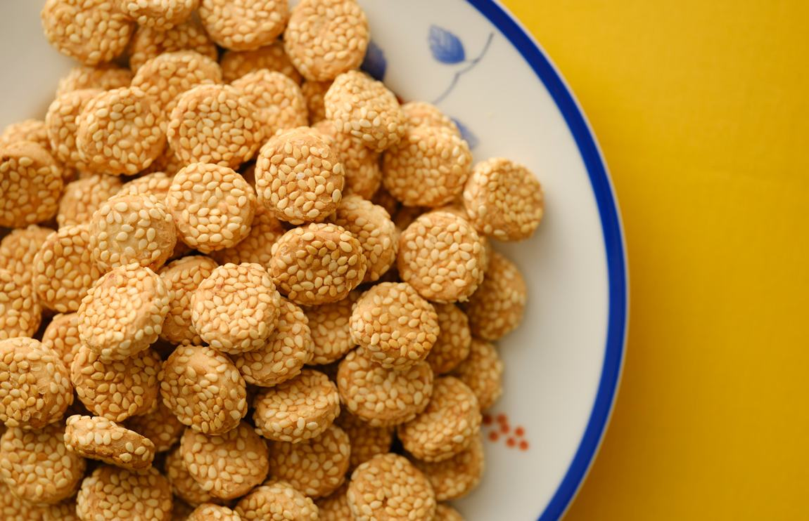
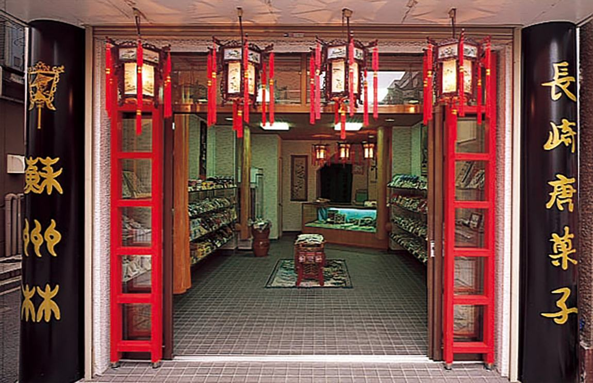
| 営業時間 | 10:00〜20:00 |
|---|---|
| 定休日 | 年中無休 |
| 住所 | 長崎県長崎市新地町13-17 |
| 予約 | 物販のため予約不要。贈答・地方発送は店頭か公式WEBショップで受付 — ☎ 095-825-6781 ／ 公式サイト |
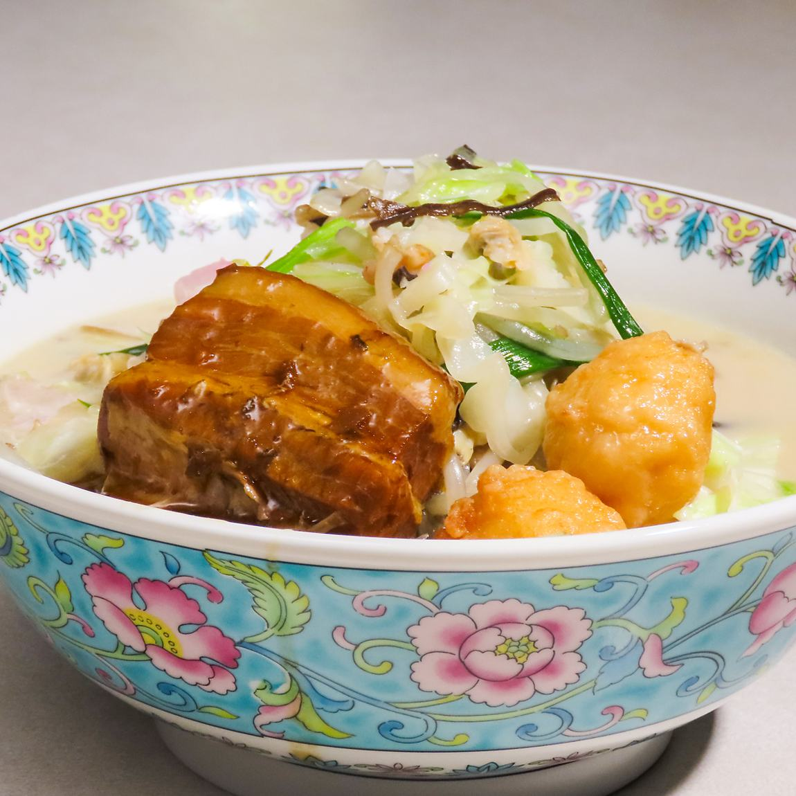
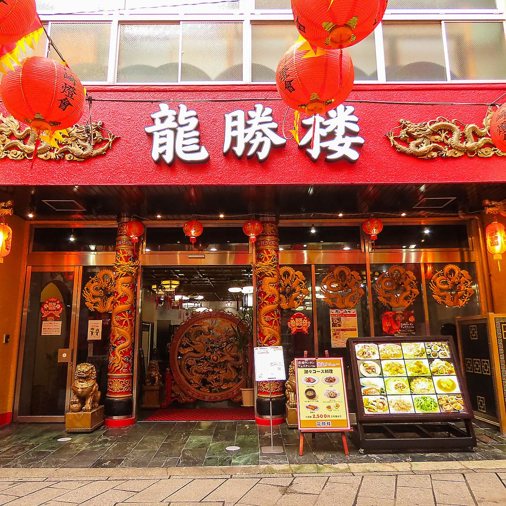
| 営業時間 | 11:00〜15:00（料理・ドリンクL.O. 14:30）／17:00〜21:00（料理・ドリンクL.O. 20:30） |
|---|---|
| 定休日 | 不定休 |
| 住所 | 長崎県長崎市新地町9-9 |
| 予約 | 電話またはホットペッパーグルメのネット予約。即時予約は前日23時まで、リクエスト予約は前日17時まで — ☎ 095-824-5333 |
| 営業時間 | 【昼】11:30〜14:00／【夜】17:30〜21:00（ラストオーダー 20:30）。朝食ビュッフェ 6:30〜9:30 |
|---|---|
| 定休日 | なし（日曜は休みとなる週があり、月曜が祝日の三連休のときは日曜営業・月曜休みに入れ替わる） |
| 住所 | 長崎県長崎市新地町13-10 ホテルＪＡＬシティ長崎 2F |
| 予約 | 電話またはホットペッパーグルメのネット予約。コース料理は前日までの予約で2名から — ☎ 095-825-2580 ／ 公式サイト |
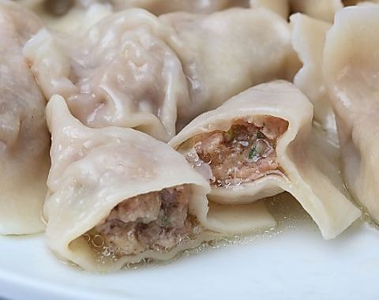
| 営業時間 | 11:30〜15:00（料理・ドリンクL.O. 14:30）／17:00〜22:00（料理・ドリンクL.O. 21:30） |
|---|---|
| 定休日 | 12月31日・1月1日のみ |
| 住所 | 長崎県長崎市新地町12-7 2F |
| 予約 | 電話またはホットペッパーグルメのネット予約。即時予約は前日15時まで — ☎ 095-820-3717 ／ 公式サイト |
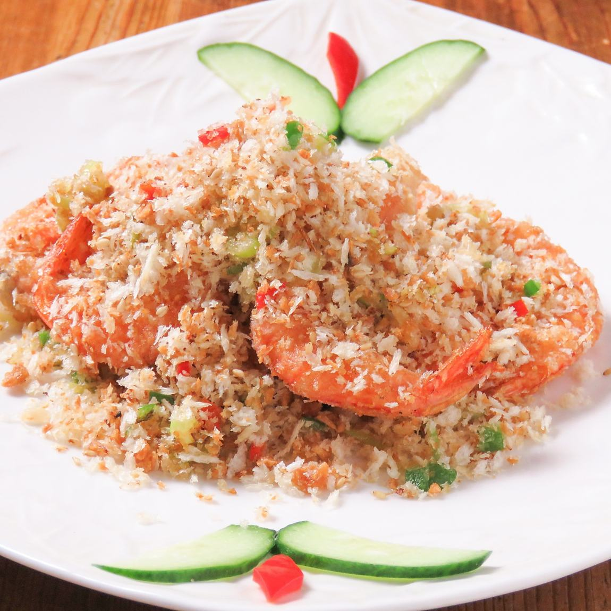
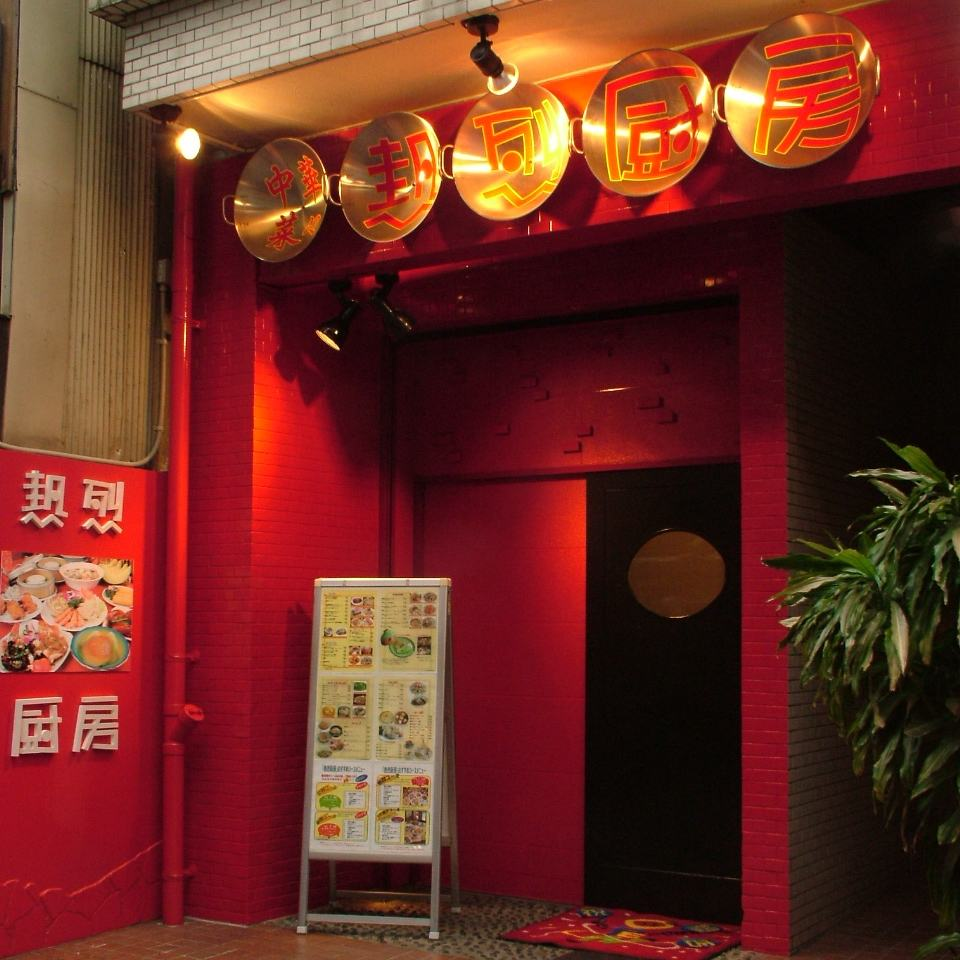
| 営業時間 | 11:30〜14:30／17:30〜翌2:00（料理・ドリンクL.O. 翌1:00）。金・土・祝前日はランチも11時から |
|---|---|
| 定休日 | 不定休 |
| 住所 | 長崎県長崎市銅座町13-12 谷口ビル1F |
| 予約 | 電話またはホットペッパーグルメのネット予約。即時予約は来店日当日22時まで、リクエスト予約は前日17時まで。ランチは予約のみ受付 — ☎ 095-829-2556 |
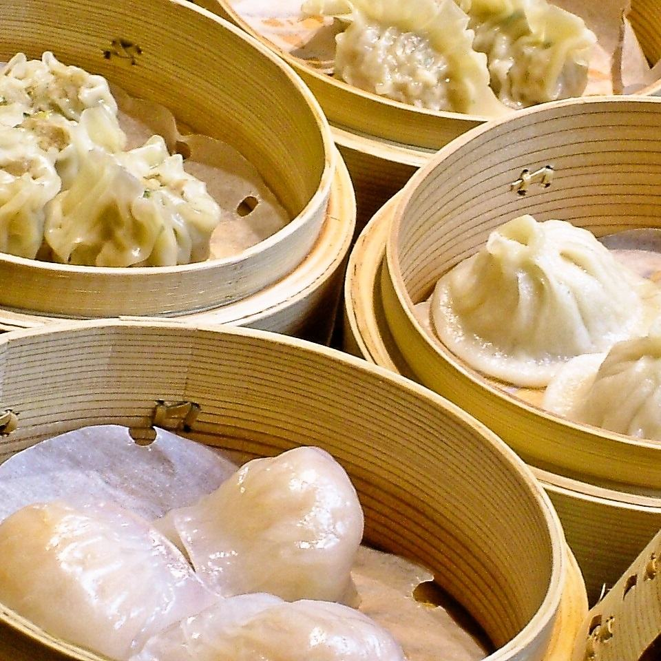
| 営業時間 | 火〜土 11:30〜14:00（料理・ドリンクL.O. 13:30）／17:00〜22:00（料理・ドリンクL.O. 21:30）。日 11:30〜14:00／17:00〜21:30（料理・ドリンクL.O. 21:00）。祝日はランチメニューの提供なし |
|---|---|
| 定休日 | 月曜 |
| 住所 | 長崎県長崎市油屋町1-7 |
| 予約 | 電話またはホットペッパーグルメのネット予約。即時予約は来店日当日12時まで、リクエスト予約は前日17時まで。貸切は不可 — ☎ 095-829-7440 |
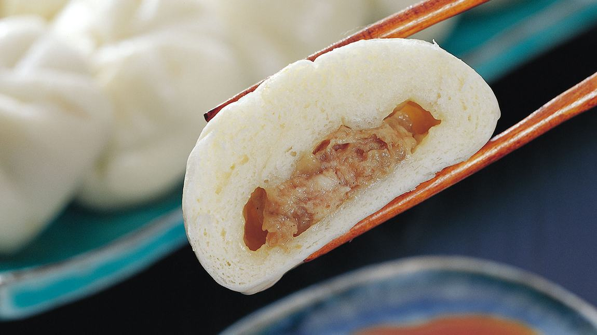
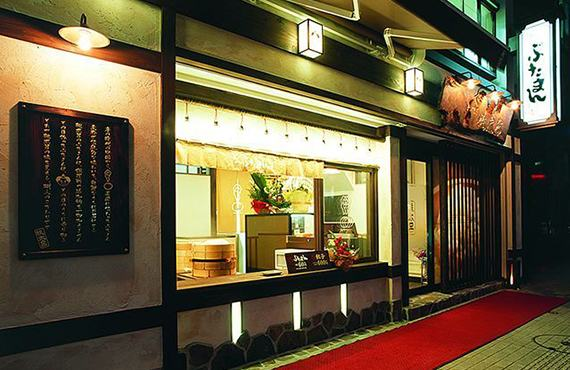
| 営業時間 | 平日10時〜23時（日曜 10時〜18時）。売り切れ次第終了 |
|---|---|
| 定休日 | 無休 |
| 住所 | 長崎県長崎市浜町10-19 |
| 予約 | 持ち帰り専門のため予約不要。全国発送は公式オンラインショップで受付 — ☎ 095-823-7542 ／ 公式サイト |
| 営業時間 | 8:30〜20:00 |
|---|---|
| 定休日 | 年中無休 |
| 住所 | 長崎県長崎市尾上町1-67 長崎街道かもめ市場 |
| 予約 | 持ち帰り中心のため予約不要。贈答・地方発送は公式オンラインストアで受付 — ☎ 095-895-9908 ／ 公式サイト |
| 営業時間 | 月〜日・祝日・祝前日 17:30〜翌1:00（料理L.O. 翌0:00／ドリンクL.O. 翌0:30） |
|---|---|
| 定休日 | 不定休 |
| 住所 | 長崎県長崎市本石灰町3-3 |
| 予約 | 予約可。電話095-807-5027（問い合わせは12時以降）。ホットペッパーグルメのネット予約は即予約が来店日の当日21時まで、リクエスト予約が前日17時まで。コース予約は来店14日前0時以降のキャンセルでコース料金の全額が発生する — ☎ 095-807-5027 |
| 営業時間 | 月〜日・祝日・祝前日 16:00〜23:00（料理L.O. 22:30／ドリンクL.O. 22:30） |
|---|---|
| 定休日 | 年末年始 |
| 住所 | 長崎県長崎市本石灰町5-3 |
| 予約 | 予約可。電話095-828-6888（問い合わせ15:00〜23:00）。ホットペッパーグルメのネット予約は即予約が来店日の当日21時まで、リクエスト予約が前日17時まで — ☎ 095-828-6888 |
| 営業時間 | 月〜日・祝日・祝前日 17:00〜翌1:00（料理L.O. 翌0:00／ドリンクL.O. 翌0:30） |
|---|---|
| 定休日 | なし（年中無休） |
| 住所 | 長崎県長崎市銅座町12-14 |
| 予約 | 予約可。電話095-827-6111。ホットペッパーグルメのネット予約は即予約が来店日の当日23時まで、リクエスト予約が前日17時まで。コース予約は来店6日前0時以降のキャンセルでコース料金の全額が発生する — ☎ 095-827-6111 |
| 営業時間 | 昼 12:00〜14:00（完全予約制）／夜 18:00〜24:00（L.O. 21:30）。祝日は17:00〜22:00 |
|---|---|
| 定休日 | 日曜日 |
| 住所 | 長崎県長崎市油屋町2-32 |
| 予約 | 完全予約制。電話095-825-3600、または公式サイトのWEB予約。夜も事前予約をすすめている。席の希望・苦手な食材・アレルギーは予約時に相談できる — ☎ 095-825-3600 ／ 公式サイト |
| 営業時間 | 昼 11:30〜14:30（オーダーストップ 14:00）／夜 17:30〜21:30（ラストオーダー 20:30） |
|---|---|
| 定休日 | 毎週月曜日、12月31日・1月1日・1月2日・8月15日 |
| 住所 | 長崎県長崎市銅座町7-11 |
| 予約 | 予約可。電話095-821-8213（FAX 095-823-6652）。「あら（クエ）尽くしコース」は要予約で、あらの入荷がないときは出せない。個室はコース利用が優先で、席のみの予約は平日の空きがある場合に限る（土日に席のみで部屋を使うと1部屋2時間2,000円の部屋料） — ☎ 095-821-8213 ／ 公式サイト |
| 営業時間 | 月・水〜日・祝日・祝前日 11:00〜13:30（料理L.O. 13:00／ドリンクL.O. 13:00）／17:00〜22:00（料理L.O. 21:30／ドリンクL.O. 21:30） |
|---|---|
| 定休日 | 火曜日 |
| 住所 | 長崎県長崎市元船町11-10 丸重ビル1F |
| 予約 | 予約可。電話095-823-8807。ホットペッパーグルメのネット予約は即予約が来店日の当日21時まで — ☎ 095-823-8807 |
| 営業時間 | 月〜日・祝日・祝前日 11:00〜14:00（料理L.O. 14:00／ドリンクL.O. 14:00）／17:00〜22:00（料理L.O. 21:00／ドリンクL.O. 21:00） |
|---|---|
| 定休日 | 不定休（日曜・祝祭日は要予約） |
| 住所 | 長崎県長崎市樺島町8-2 |
| 予約 | 予約可。電話095-821-4661。ホットペッパーグルメのネット予約は即予約が来店日の当日19時まで、リクエスト予約が前日17時まで。日曜・祝祭日は要予約 — ☎ 095-821-4661 |
| 営業時間 | 月〜土 17:00〜22:00（料理L.O. 21:00／ドリンクL.O. 21:30） |
|---|---|
| 定休日 | 日曜日 |
| 住所 | 長崎県長崎市岩川町5-12 |
| 予約 | 予約可。電話095-843-1818。ホットペッパーグルメのネット予約は即予約が来店日の当日14時まで。ふぐはコースでの受付 — ☎ 095-843-1818 ／ 公式サイト |
| 営業時間 | 月〜水・金・土・祝日・祝前日 18:00〜翌0:00（料理L.O. 23:00／ドリンクL.O. 23:00）／日 18:00〜22:00（料理L.O. 21:30／ドリンクL.O. 21:30）。ネタ切れ・シャリ切れで早く閉めることがある |
|---|---|
| 定休日 | 木曜日（木曜以外に休みがある場合がある） |
| 住所 | 長崎県長崎市住吉町11-20 福地ビル1階 |
| 予約 | 予約可。電話090-4352-9333（営業時間内にかけるのが確実）。ホットペッパーグルメのネット予約は即予約が来店日の当日22時まで — ☎ 090-4352-9333 |
| 営業時間 | 9:30〜17:00（L.O.16:30）／モーニング 9:30〜11:00 |
|---|---|
| 定休日 | 木曜日 |
| 住所 | 長崎県長崎市鍛冶屋町2-12 |
| 予約 | 公式サイトに予約の案内はなく、20席のため来店順 — ☎ 095-822-1625 ／ 公式サイト |
| 営業時間 | 11:00〜18:00 |
|---|---|
| 定休日 | 月曜日 |
| 住所 | 長崎県長崎市東古川町4-25 1F |
| 予約 | 公式サイトに席の予約の案内はない（コーヒースタンド）。珈琲教室のみ店頭またはメールで申し込む — ☎ 090-7291-0467 ／ 公式サイト |
| 営業時間 | 10:00〜20:00（ラストオーダー19:30） |
|---|---|
| 定休日 | 店独自の定休日の記載はなく、みらい長崎ココウォークの休館日に準じる |
| 住所 | 長崎県長崎市茂里町1-55 みらい長崎ココウォーク3階 |
| 予約 | 公式サイト・施設サイトに予約の案内はない（来店順） — ☎ 095-801-5887 ／ 公式サイト |
| 営業時間 | 11:30〜22:00（ランチメニューは11:30〜15:00） |
|---|---|
| 定休日 | 毎週水曜日・年末年始 |
| 住所 | 長崎県長崎市出島町1-1 長崎出島ワーフ1F 美術館側 |
| 予約 | 予約可。電話（095-820-2366）で受け付け、パーティープランは30名から — ☎ 095-820-2366 ／ 公式サイト |
| 営業時間 | 月〜日・祝日・祝前日 11:00〜22:00（料理L.O.21:00／ドリンクL.O.21:00）。昼のランチは11:00〜17:00 |
|---|---|
| 定休日 | 不定休（店に確認） |
| 住所 | 長崎県長崎市浜町8-28 浜町インポートビル2・3階 |
| 予約 | 予約可。電話（095-825-9378）またはホットペッパーグルメのネット予約。18時以降の予約は店から確認の電話が入る場合がある — ☎ 095-825-9378 ／ 公式サイト |
| 営業時間 | 月〜金 11:00〜20:00（L.O.19:30）／土・日・祝 11:00〜21:00（L.O.20:30） |
|---|---|
| 定休日 | 長崎市公式観光サイトの店舗情報は「なし」。公式ページには「月曜定休日（祝日は営業、翌火曜定休日）」の記載もあるため来店前に要確認 |
| 住所 | 長崎県長崎市浜町8-13 仲見世ビル2F |
| 予約 | 予約可。公式ページ掲載の電話は 050-5487-8151。個室あり、貸切は10〜30名 — ☎ 095-824-3912 ／ 公式サイト |
| 営業時間 | ランチ 11:30〜15:30（料理L.O.15:00／ドリンクL.O.15:00）／ディナー 18:00〜21:30（料理L.O.20:30／ドリンクL.O.21:00）。最終入店はオーダーストップの15分前 |
|---|---|
| 定休日 | 不定休（公式サイトの「お知らせ」で月ごとに告知） |
| 住所 | 長崎県長崎市古川町3-3 若喜屋ビル2F |
| 予約 | 予約可。電話（095-829-2115）またはホットペッパーグルメのネット予約。貸切は12名から — ☎ 095-829-2115 ／ 公式サイト |
| 営業時間 | 11:00〜21:30（オーダーストップ21:00） |
|---|---|
| 定休日 | 不定休（公式サイトのカレンダーと「新着情報」で告知） |
| 住所 | 長崎県長崎市京泊2丁目9-34 |
| 予約 | 予約不可（公式サイトに「ご予約は承っておりません」と明記）。テイクアウトのみ電話で受け付ける — ☎ 095-840-1860 ／ 公式サイト |
| 営業時間 | 9:30〜17:00（電話での受付は10:00〜16:30） |
|---|---|
| 定休日 | 無休（2025年11月より毎週水曜の定休日を廃止） |
| 住所 | 長崎県長崎市船大工町3-1 |
| 予約 | 予約不要（店頭販売のみ）。電話注文・通信販売は浦上流通センター 095-845-2938 が受付（10:00〜16:30） — ☎ 095-821-2938 ／ 公式サイト |
| 営業時間 | 本店（売場）9:00〜18:00／2F 喫茶セヴィリヤ 10:00〜17:00 |
|---|---|
| 定休日 | 公式サイトの本店紹介に定休日の記載なし（喫茶セヴィリヤは2026年6月18日付のお知らせで毎週火曜の定休日を廃止） |
| 住所 | 長崎県長崎市魚の町3-19 |
| 予約 | 喫茶セヴィリヤは前日までの席の予約を公式サイトが推奨（公式の予約ページ、または 095-822-0410／電話受付9:30〜17:00）。1階の売場は予約不要 — ☎ 095-822-0410 ／ 公式サイト |
| 営業時間 | 9:00〜18:00 |
|---|---|
| 定休日 | 元日のみ |
| 住所 | 長崎県長崎市江戸町1-1 |
| 予約 | 予約不要（店頭販売のみ）。焼印カステラなどの名入れ品は1箱から注文可 — ☎ 095-824-0002 ／ 公式サイト |
| 営業時間 | 10:00〜16:00（短縮・延長の場合あり） |
|---|---|
| 定休日 | 火・木・日曜日（催事などで変則営業あり） |
| 住所 | 長崎県長崎市諏訪町7-1 |
| 予約 | 長崎カステラは店頭で随時予約を受付（受け取りまで6〜12か月が目安）。電話・FAX・オンラインショップでの予約は休止中 — ☎ 095-822-0977 ／ 公式サイト |
| 営業時間 | 9:30〜18:00（和風喫茶 志らみずは11:00〜17:30、季節により変動） |
|---|---|
| 定休日 | 不定休 |
| 住所 | 長崎県長崎市油屋町1-3 |
| 予約 | 公式サイトに席の予約の案内はない（先着順） — ☎ 095-826-0145 ／ 公式サイト |
| 営業時間 | 1F 売場 10:00〜19:00／2F サロン・ド・フィーヌ 11:00〜17:30（L.O. 17:00） |
|---|---|
| 定休日 | 不定休 |
| 住所 | 長崎県長崎市浜町7-3 |
| 予約 | 公式サイトに席の予約の案内はない（先着順） — ☎ 095-825-3228 ／ 公式サイト |
| 営業時間 | 9:00〜17:00 |
|---|---|
| 定休日 | 水曜日 |
| 住所 | 長崎県長崎市茂木町1805 |
| 予約 | 予約不要（店頭販売のみ）。発送の注文は受注センター 0120-49-1052 またはネットショップ — ☎ 095-836-1919 ／ 公式サイト |
| 営業時間 | 11:00〜16:00（店頭でのアイス宅配の注文受付は15:30まで） |
|---|---|
| 定休日 | 不定休（公式サイトのトップに月ごとの店休日を掲載。2026年11月は10日・17日・18日・19日・20日） |
| 住所 | 長崎県長崎市古川町3-17 |
| 予約 | 予約不要（店頭販売）。発送は公式サイトの通販で受付 — ☎ 095-822-4875 ／ 公式サイト |
本ガイドは個人利用目的で作成。掲載情報は2026年11月時点の調査に基づく。写真出典: 各店の公式サイト・公式SNS、および観光協会・地域情報サイト等の掲載写真（著作権は各サイト・各撮影者に帰属）。引用元は店ごとにカード内へ明記。